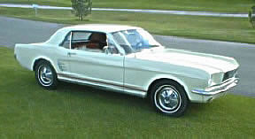

Mustangs
|
|  In memory of Travis Allen Smith Travis was killed instantly, at age 17, in a car accident just south of Moab, Utah. A man transporting illegal aliens fell asleep at the wheel after driving all night, crossing the centerline and hitting Travis's Mustang head on at a high rate of speed. The driver of the other car survived, as did the three males in the rear seat. However, a young female in the front passenger seat was also killed. Travis was an active member of the FordSix Performance forum, had a passion for Mustangs and inline sixes, and will be forever missed by all that knew him. Rest in peace my friend. |